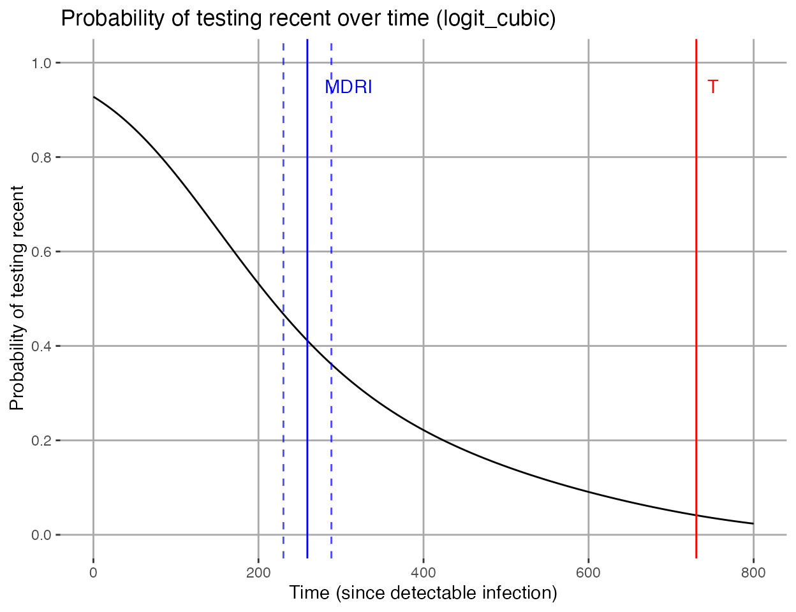

Recent infection test calibration
21 September 2018
Source:vignettes/TestCalibration.Rmd
TestCalibration.RmdThis vignette covers the use of functions mdrical and frrcal.
Introduction
Incidence estimates from cross-sectional surveys using biomarkers for ‘recent infection’ require that the test for recent infection (usually an adapted diagnostic assay) be accurately characterised. The two critical parameters of test performance are the Mean Duration of Recent Infection (MDRI), denoted \(\Omega_T\), (with \(T\) the recency cutoff time), and False Recent Rate (FRR), denoted \(\beta_T\). The explicit time cutoff \(T\) was introduced by Kassanjee et al. Epidemiology, 2012.1 to differentiate between ‘true recent’ and ‘false recent’ results. Also see Kassanjee, McWalter, Welte. AIDS Research and Human Retroviruses, 2014.2, which notes:
To lead to an informative estimator, this cut-off, though theoretically arbitrary, must be chosen to reflect the temporal dynamic range of the test for recent infection; i.e. at a time T post infection, the overwhelming majority of infected people should no longer be testing “recent”, and furthermore, T should not be larger than necessary to achieve this criterion.3
MDRI is defined as the average time alive and returning a ‘recent’ result, while infected for times less than \(T\). FRR is defined as a cross sectional context specific proportion of subjects returning a ‘recent’ result while infected for longer than \(T\).
Test performance may be context-specific, and therefore, where available, local data should be used to calibrate tests. Often cross-sectional incidence surveys use a multi-step Recent Infection Testing Algorithm (RITA) and then the entire RITA must be appropriately calibrated. This may involve adapting MDRI estimates to account for the sensitivity of screening tests, or adapting FRR estimates based on weighted estimates for subpopulations such as treated individuals. Calibration should be performed using the same set of biomarkers used in a RITA, such as a viral load threshold to reduce false recency.
Estimating MDRI using binomial regression
This package provides the function mdrical to estimate MDRI for a given biomarker or set of biomarkers from a dataset of based on the test being applied to well-characterised specimens and subjects. That is, time since ‘infection’ should be well-known, as well as test result(s). While ‘infection time’ can be variously defined as refering to the exposure event, date of first detectability on an RNA assay, Western Blot seroconversion, etc., it should be consistently used. If the reference event used in test calibration differs from test conversion on the screening assay or algorithm that is used define someone as HIV-positive in a RITA, then the MDRI needs to be appropriately adapted to cater for this difference.
Function mdrical estimates MDRI by fitting a model for the probability of testing ‘recent’ as a function of time since infection \(P_R(t)\). As an option, one of two functional forms (with their associated link functions) can be selected by the user. Fitting is performed using a generalised linear model (as implemented in the glm2 package) to estimate parameters.
The linear binomial regression model takes the following form, with \(g()\) the link function
\[\begin{equation} g(P_R(t)) = f(t) \end{equation}\]
If the argument functional_forms is specified with the value "cloglog_linear", \(g()\) is the complementary log-log link function and \(\ln(t)\) as linear predictor of \(P_R(t)\), so that:
\[\begin{equation} \ln\left(-\ln(1-P_R(t)\right) = \beta_0 + \beta_1\ln(t) \end{equation}\]
If the argument functional_forms is specified with the value "logit_cubic", \(g()\) is the complementary log-log link function and the linear predictor of \(P_R(t)\) is a cubic polynomial in \(t\), so that:
\[\begin{equation} \ln{\left(\frac{P_R(t)}{1-P_R(t)}\right)} = \beta_0 + \beta_1t + \beta_2t^2 + \beta_3t^3 \end{equation}\]
In both cases, MDRI is the integral of \(P_R(t)\) from \(0\) to \(T\).
\[\begin{equation} \Omega_T = \int_{0}^{T} P_R(t)dt \end{equation}\]
The default behaviour is to implement both model forms if the argument functional_forms is omitted.
Confidence intervals are computed by means of subject-level bootstrapping, as measurements from subjects with more than one measurement in the dataset cannot be considered indpendent observations. An MDRI estimate is then calculated using the resampled data. The number of bootstrap iterations is specified using the argument n_bootstraps. We recommend 10,000 for reproducible confidence intervals and standard errors. To support subject level resampling, the subject identifier in the dataset must be specified using the subid_var argument.
In addition to specifying the value of \(T\) (using the argument recency_cutoff_time), an inclusion_time_threshold is required, to exclude data points beyond a certain time (post infection). This is to prevent falsely recent measurements from unduly affecting the fit between \(0\) and \(T\). This should typically be a value somewhat (but not too much) larger than \(T\).
To specify recency status, one can either supply a list of variables and thresholds (indicating in whether a result above or below the thresholds signifies recency) or specify the recency_rule as "binary_data", in which case a 1 indicates recency.
Example of mdrical using the complementary log-log functional form and pre-classified data
Load the package in order to use it
The dataset excalibdata contains example data from an evaluation of an assay measuring recency of infection. At an assay result of <10, the specimen is considered to be recently infected. It further contains viral load data, which is commonly used to reduce false recency. For example, when recency is defined as assay result <10 and viral load > 1000, the FRR is substantially lower (but the MDRI is also reduced).
The first example provides a variable that has pre-classified results, and uses only the complementary log-log functional form.
Note that in these examples we perform only 1,000 bootstraps, but in real-life use no fewer than 10,000 is recommended.
mdri <- mdrical(data=excalibdata,
subid_var = "SubjectID",
time_var = "DaysSinceEDDI",
recency_cutoff_time = 730.5,
inclusion_time_threshold = 800,
functional_forms = c("cloglog_linear"),
recency_rule = "binary_data",
recency_vars = "Recent",
n_bootstraps = 1000,
alpha = 0.05,
plot = TRUE,
parallel = FALSE)
print(mdri)## $MDRI
## # A tibble: 1 x 8
## FuncForm PE CI_LB CI_UB SE n_recent n_subjects n_observations
## <chr> <dbl> <dbl> <dbl> <dbl> <dbl> <dbl> <dbl>
## 1 cloglog_li… 248.145 221.871 275.385 13.9594 270 304 708
##
## $Models
## $Models$cloglog_linear
##
## Call: glm2::glm2(formula = recency_status ~ 1 + I(log(time_since_eddi)),
## family = stats::binomial(link = "cloglog"), data = data,
## control = stats::glm.control(epsilon = tolerance, maxit = maxit,
## trace = FALSE))
##
## Coefficients:
## (Intercept) I(log(time_since_eddi))
## 4.0858 -0.9052
##
## Degrees of Freedom: 707 Total (i.e. Null); 706 Residual
## Null Deviance: 941.2
## Residual Deviance: 747.4 AIC: 751.4
##
##
## $Plots
## $Plots$cloglog_linear##
##
## $BSparms
## NULL
Example of mdrical using the logit cubic functional form and two independent thresholds on biomarkers
This example also specifies a vector of variables and a vector of paramaters to define recency, using the assay result and the viral load. The paramaters in the vector c(10,0,1000,1) mean that recency is defined as an assay biomarker reading below 10 and a viral load reading above 1000.
mdri <- mdrical(data=excalibdata,
subid_var = "SubjectID",
time_var = "DaysSinceEDDI",
recency_cutoff_time = 730.5,
inclusion_time_threshold = 800,
functional_forms = c("logit_cubic"),
recency_rule = "independent_thresholds",
recency_vars = c("Result","VL"),
recency_params = c(10,0,1000,1),
n_bootstraps = 1000,
alpha = 0.05,
plot = TRUE,
parallel = FALSE)
print(mdri)## $MDRI
## # A tibble: 1 x 8
## FuncForm PE CI_LB CI_UB SE n_recent n_subjects n_observations
## <chr> <dbl> <dbl> <dbl> <dbl> <dbl> <dbl> <dbl>
## 1 logit_cubic 259.223 230.240 288.328 14.8080 270 295 644
##
## $Models
## $Models$logit_cubic
##
## Call: glm2::glm2(formula = recency_status ~ 1 + I(time_since_eddi) +
## I(time_since_eddi^2) + I(time_since_eddi^3), family = stats::binomial(link = "logit"),
## data = data, control = stats::glm.control(epsilon = tolerance,
## maxit = maxit, trace = FALSE))
##
## Coefficients:
## (Intercept) I(time_since_eddi) I(time_since_eddi^2)
## 2.554e+00 -1.591e-02 2.184e-05
## I(time_since_eddi^3)
## -1.471e-08
##
## Degrees of Freedom: 643 Total (i.e. Null); 640 Residual
## Null Deviance: 875.9
## Residual Deviance: 635.3 AIC: 643.3
##
##
## $Plots
## $Plots$logit_cubic##
##
## $BSparms
## NULL
Obtaining fitting parameters for bootstrap iterations
It is possible to output the fitting parameters for each bootstrap iteration, by using the switch output_bs_parms = TRUE. This provides the user with the family of \(P_{R}(t)\) curves used to obtain the confidence intervals on the MDRI estimate, for potential further manipulation. Note that the functional form cloglog_linear form has two parameters (labeled \(\beta_0\) and \(\beta_1\)), and the logit_cubic form has four parameters (labeled \(\beta_0\) to \(\beta_3\)). In each case \(\beta_0\) denotes the intercept. In order to use these parameters to obtain predicted probabilities of testing recent for given times since infection, the complementary log-log and logit link functions must be “inverted”, so that the equations giving predicted probabilities are
\[\begin{equation} P_R(t) = \exp(-\exp(\beta_{0} + \beta_{1}\ln(t))) \end{equation}\]
and
\[\begin{equation} P_R(t) = \frac{1}{1 + \exp(-(\beta_{0} + \beta_{1}t + \beta_{2}t^2 + \beta_{3}t^3))} \end{equation}\]
respectively.
As a demonstration, we perform only 10 bootstrap iterations in the example below:
mdri <- mdrical(data=excalibdata,
subid_var = "SubjectID",
time_var = "DaysSinceEDDI",
recency_cutoff_time = 730.5,
inclusion_time_threshold = 800,
functional_forms = c("cloglog_linear","logit_cubic"),
recency_rule = "independent_thresholds",
recency_vars = c("Result","VL"),
recency_params = c(10,0,1000,1),
n_bootstraps = 10,
parallel = FALSE,
alpha = 0.05,
plot = TRUE,
output_bs_parms = TRUE)
print(mdri$Models)## $cloglog_linear
##
## Call: glm2::glm2(formula = recency_status ~ 1 + I(log(time_since_eddi)),
## family = stats::binomial(link = "cloglog"), data = data,
## control = stats::glm.control(epsilon = tolerance, maxit = maxit,
## trace = FALSE))
##
## Coefficients:
## (Intercept) I(log(time_since_eddi))
## 4.3171 -0.9211
##
## Degrees of Freedom: 643 Total (i.e. Null); 642 Residual
## Null Deviance: 875.9
## Residual Deviance: 675.9 AIC: 679.9
##
## $logit_cubic
##
## Call: glm2::glm2(formula = recency_status ~ 1 + I(time_since_eddi) +
## I(time_since_eddi^2) + I(time_since_eddi^3), family = stats::binomial(link = "logit"),
## data = data, control = stats::glm.control(epsilon = tolerance,
## maxit = maxit, trace = FALSE))
##
## Coefficients:
## (Intercept) I(time_since_eddi) I(time_since_eddi^2)
## 2.554e+00 -1.591e-02 2.184e-05
## I(time_since_eddi^3)
## -1.471e-08
##
## Degrees of Freedom: 643 Total (i.e. Null); 640 Residual
## Null Deviance: 875.9
## Residual Deviance: 635.3 AIC: 643.3
print(mdri$BSparms)## $cloglog_linear
## # A tibble: 10 x 2
## beta0 beta1
## <dbl> <dbl>
## 1 3.29594 -0.761601
## 2 5.05694 -1.06022
## 3 6.60235 -1.36734
## 4 4.95220 -1.04441
## 5 3.70290 -0.809043
## 6 5.60194 -1.15259
## 7 4.69908 -1.00689
## 8 5.00977 -1.09142
## 9 3.93211 -0.845659
## 10 4.06603 -0.853132
##
## $logit_cubic
## # A tibble: 10 x 4
## beta0 beta1 beta2 beta3
## <dbl> <dbl> <dbl> <dbl>
## 1 2.35567 -0.0181791 0.0000429113 -4.70728e-8
## 2 2.98647 -0.0187627 0.0000275547 -1.76425e-8
## 3 2.59631 -0.0190237 0.0000344552 -2.71399e-8
## 4 2.67829 -0.0188507 0.0000357175 -2.89343e-8
## 5 2.69395 -0.0173708 0.0000235609 -1.52147e-8
## 6 2.43651 -0.0187123 0.0000327189 -2.46380e-8
## 7 1.97974 -0.00593447 -0.0000127699 1.37053e-8
## 8 2.27268 -0.0158627 0.0000232652 -1.49586e-8
## 9 2.39561 -0.0141260 0.0000185814 -1.35574e-8
## 10 2.85485 -0.0215979 0.0000391911 -2.82185e-8
Estimating FRR using binomial proportions with frrcal
FRR is simply the binomially estimated probability of a subject’s measurements post-\(T\) being ‘recent’ on the recency test. A binomial exact test is performed using binom.test. All of a subject’s measurements post-\(T\) are evaluated and if the majority are recent, the subject is considered to have measured falsely recent. Inversely, if a majority are non-recent, the subject contributes a ‘true recent’ result. Each subject represents one trial. In the case that exactly half of a subject’s measurements are recent, they contribute 0.5 to the outcomes (which are rounded up to the nearest integer over all subjects).
This example calculates a false-recent rate, treating the data at subject level:
frrcal(data=excalibdata,
subid_var = "SubjectID",
time_var = "DaysSinceEDDI",
recency_cutoff_time = 730.5,
recency_rule = "independent_thresholds",
recency_vars = c("Result","VL"),
recency_params = c(10,0,1000,1),
alpha = 0.05)## # A tibble: 1 x 9
## FRRest SE CI_LB CI_UB alpha n_recent n_subjects
## <dbl> <dbl> <dbl> <dbl> <dbl> <int> <int>
## 1 0.0300752 0.0104721 0.0130720 0.0583978 0.05 8 266
## # … with 2 more variables: n_observations <int>, ci_method <chr>Kassanjee, R., McWalter, T.A., Baernighausen, T. and Welte, A. “A new general biomarker-based incidence estimator.” Epidemiology; 2012, 23(5): 721-728.↩︎
Kassanjee, R., McWalter, T.A. and Welte, A. “Short Communication: Defining Optimality of a Test for Recent Infection for HIV Incidence Surveillance.” AIDS Research and Human Retroviruses; 2014, 30(1): 45-49.↩︎
Kassanjee, R., McWalter, T.A., Baernighausen, T. and Welte, A. “A new general biomarker-based incidence estimator.” Epidemiology; 2012, 23(5): 721-728.↩︎